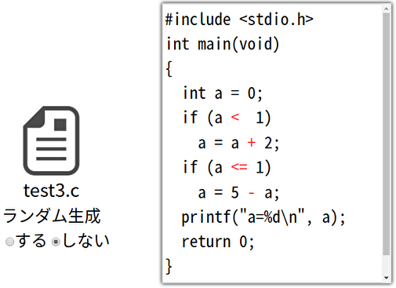

写経型学習の欠点を補う摂動を用いた理解度確認問題生成手法
--- 二項演算子の事例に基づく有効性評価
このページでは、以下の論文で提示した方式で実装した摂動を用いた学習のWeb applicationのソースコードを公開しています。
使い方
plss-0.1.1.tar.gzをダウンロードして展開し、
Readme.txtファイルに従ってインストール、実行してください。
スクリーンショット

更新履歴
- 2019年9月26日 version 0.1.1を公開
ツールの表紙画像を変更
- 2019年8月25日 version 0.1.0を公開
捕捉
ver0.1.0は手違いにより削除しました。